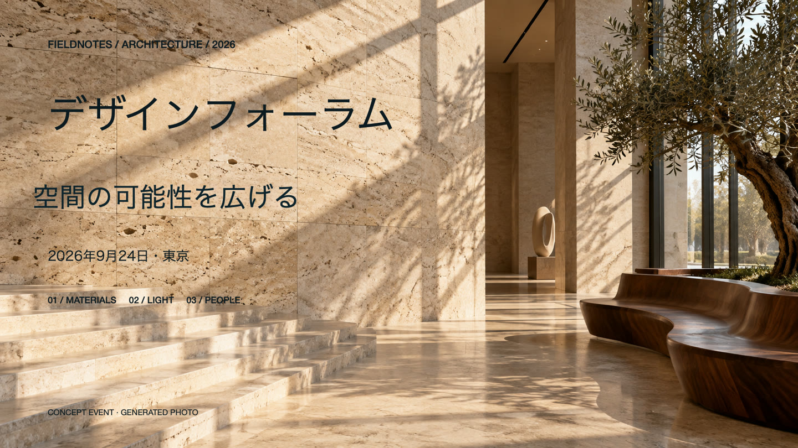

文字を見つける
PDFや画像を開き、OCRで認識された文字の領域を選択します。
画像PDFエディタ · MAC専用
日付の変更も、見出しの修正も。画像になったPDFの文字を、資料全体を作り直さずに編集できます。
編集・書き出しは無料 · 書類の処理はMac上で

BEFORE / AFTER
石の質感、影、細かな模様のある背景。元の画像と、実際に背景を復元して文字を置き換えた結果を比較できます。
架空のイベント用に生成した画像を、実際にオンデバイスで処理した結果です。背景によって品質は変わります。隠れた細部や元のフォントの正確な復元は保証されません。
IN THE APP
OCRで選択し、文字を修正。背景の復元を確認してPDFに保存するまで、実際のMacアプリで撮影しました。
30秒のデモ · 一部は映像内に表示した2倍速 · 音声なし
1.1.0はリリース済みです。1.2.0は2026年9月13日に提出し、App Reviewの審査待ちです。サイトの1.2デモは提出版の画面です。これらの変更はリリース後に利用できます。 バージョン別の変更を見る →
PDFや画像を開き、OCRで認識された文字の領域を選択します。
文字、フォント、色、字間を変更。復元した背景を確認・調整してから適用します。
取り消しとやり直しを使い、新しいPDF、画像、動画、GIFとして書き出します。
すべての編集・書き出し機能は無料です。1.2ではヘルプや設定から任意のチップで開発を応援できます。購入のたびに課金される一回限りのチップで、追加機能やサブスクリプションはありません。
OCRと画像処理はMac上で行います。任意の購入にはAppleの決済サービスを使いますが、書類を処理のために送信することはありません。
いいえ。写真、模様、小さな文字、低解像度のスキャンでは手動調整が必要な場合があります。結果を比較し、復元範囲を調整してから保存してください。
macOS 15.1以降とApple Silicon Mac（M1以降）が必要です。1.2の画面は英語、韓国語、日本語、中国語の簡体字・繁体字に対応します。